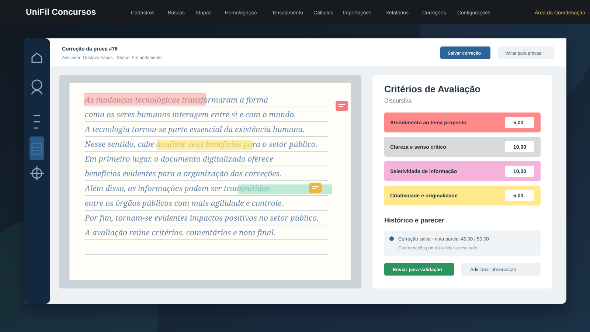

Gestão de usuários
Cadastro, busca, edição e exclusão de avaliadores e coordenadores, com dados pessoais e controle de acesso por perfil.

Sistema web para concursos públicos
Plataforma desenvolvida para digitalizar a correção de provas discursivas e peças processuais, com distribuição para avaliadores, validação pela coordenação e consulta segura pelo candidato.
Contexto
O Instituto UniFil realizava o controle de correções com planilhas, imagens de redações e processos manuais. Isso dificultava a distribuição equilibrada das provas, a validação das notas, o acompanhamento do status e a consulta individualizada pelos candidatos.
O CertameTech foi implementado sobre o sistema existente para centralizar esse processo em uma aplicação web, mantendo regras de acesso para coordenação, avaliadores e candidatos.
Problema
Solução
Funcionalidades
Cadastro, busca, edição e exclusão de avaliadores e coordenadores, com dados pessoais e controle de acesso por perfil.
Coordenação acompanha status das correções e direciona provas discursivas ou peças para avaliadores disponíveis.
Avaliador visualiza o PDF, cria marcações, informa critérios, comentários, siglas e notas conforme o tipo de prova.
Coordenação revisa a correção, consulta histórico e valida a nota antes de liberar o espelho para o candidato.
Candidato visualiza a prova corrigida somente quando o resultado está divulgado e a correção foi liberada.
Quando há período ativo, o candidato registra fundamentação e o sistema encaminha a prova para revisão da coordenação.
Arquitetura
A implementação foi feita em uma aplicação Java web existente, usando controllers, repositories e páginas JSP para integrar as regras de negócio ao fluxo administrativo e à área do candidato.
Fluxo principal
Casos de uso
Os casos de uso organizam as entregas previstas e mostram a evolução do projeto durante o bimestre.
Criar, buscar, editar e desativar contas de avaliadores e coordenadores.
Enviar um ZIP, identificar inscrições e disponibilizar os PDFs para distribuição.
Atribuir provas aos avaliadores e acompanhar quantidade e status.
Marcar o PDF, aplicar critérios, registrar comentários e salvar a nota.
Revisar a correção, alterar quando necessário e validar o resultado.
Somar notas, conferir resultados e agendar a divulgação aos candidatos.
Consultar a prova corrigida, marcações, comentários, nota e recurso.
Planejamento
| Caso de uso | Entrega prevista | Status |
|---|---|---|
| Caso01 - Gerenciar usuários | 10/06/2026 | Concluído |
| Caso02 - Fazer upload de provas | 10/09/2026 | Concluído |
| Caso03 - Distribuir discursivas e peças | 10/06/2026 | Concluído |
| Caso04 - Corrigir discursivas e peças | 27/07/2026 | Concluído |
| Caso05 - Validar correção | 06/08/2026 | Concluído |
| Caso06 e Caso07 - Nota final e consulta | 13/08/2026 | Concluído |
Documentações
O conjunto atual documenta o problema do investidor, os termos do domínio, os requisitos não funcionais e o comportamento esperado das principais funcionalidades.
Modelagem do sistema
A modelagem registra a estrutura, os comportamentos, os fluxos e a infraestrutura do CertameTech.
Atores, funcionalidades e relações de extensão entre os principais casos.
02Entidades do domínio, atributos, métodos e relacionamentos persistidos.
03Fluxo de cadastro, busca, edição e desativação de usuários.
04Envio e processamento das provas em arquivo ZIP.
05Atribuição de provas e acompanhamento dos avaliadores.
06Correção, marcações, critérios, comentários e nota.
07Revisão e validação da correção pela coordenação.
08Soma das notas e divulgação do resultado.
09Consulta da prova corrigida e solicitação de recurso.
08Candidato entra com recurso em relação a correção da sua prova.
10Estados pendente, atribuído, em andamento e corrigida.
11Transições entre usuário ativo e inativo.
12Fluxo do recurso até a correção validada.
13Dispositivo do usuário, navegador, servidor AWS e banco de dados.
14Fluxo de correção, comunicação entre perfis e solicitação de recurso.
15Tabelas, chaves e vínculos entre candidatos, provas, correções e recursos.
Evidências
Relatório de estágio
Consulte o relatório atualizado com as atividades, aprendizados e resultados obtidos durante o estágio.
Abrir relatório em PDF ↗Identificação do aluno
Resultado
O CertameTech reduz a dependência de planilhas, melhora a rastreabilidade das correções e organiza a comunicação entre coordenação, avaliadores e candidatos. O processo fica mais padronizado, com validações antes da publicação e acesso individualizado às informações.